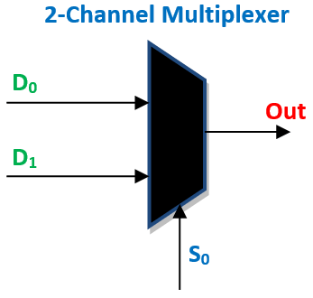

1. Multiplexer
A multiplexer (or MUX) selects one output from a choice of inputs.

Todo
Replace with your own image
Below I've included VHDL implementing a multiplexer using two different methods.
First using a with/select assignment, then using a When/Else assignment.
Both these modules will operate identically and how they are implemented is down to personal preference.
Multiplexer using With/Select Assignment
library ieee;
use ieee.std_logic_1164.all;
entity MULTIPLEXER is
port (
INPUT_1 : in std_logic_vector(3 downto 0);
INPUT_2 : in std_logic_vector(3 downto 0);
SELECT : in std_logic;
OUTPUT : out std_logic_vector(3 downto 0)
);
end entity MULTIPLEXER;
architecture RTL of MULTIPLEXER is
begin
with (SELECT) select
OUTPUT <= INPUT_1 when '0',
INPUT_2 when '1',
others => '0' when others;
end architecture MULTIPLEXER;
Warning
Always include a "when others" condition. We must tell our circuit how to behave when it can determine if a signal is a 0 or a 1. In VHDL simulation we also use Z and X states to represent high impedance and unknown states representatively.
Multiplexer using When/Else Assignment
library ieee;
use ieee.std_logic_1164.all;
entity MULTIPLEXER is
port (
INPUT_1 : in std_logic_vector(3 downto 0);
INPUT_2 : in std_logic_vector(3 downto 0);
SELECT : in std_logic;
OUTPUT : out std_logic_vector(3 downto 0)
);
end entity MULTIPLEXER;
architecture RTL of MULTIPLEXER is
begin
OUTPUT <= INPUT_1 when (SELECT = '0') else INPUT_2;
end architecture MULTIPLEXER;